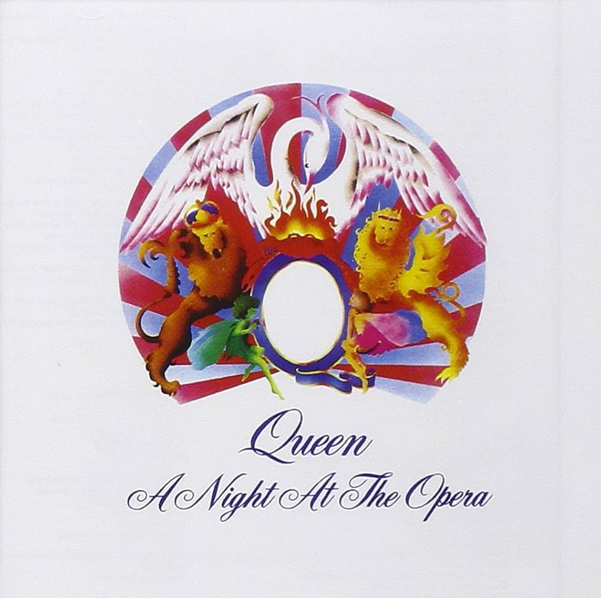
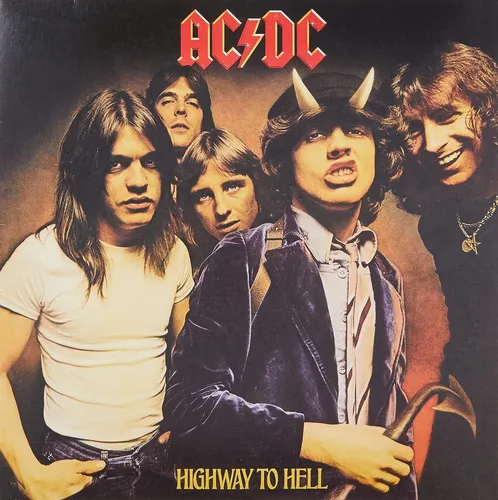

La época dorada del disco, el funk vibrante y el nacimiento del rock clásico.

Quinto álbum de estudio de la banda británica de rock Led Zeppelin, lanzado el 28 de marzo de 1973 por Atlantic Records
Agregar al Carrito
octavo álbum de estudio de la banda británica de rock progresivo Pink Floyd, lanzado el 1 de marzo de 1973 a través de Harvest Records y Capitol Records
Agregar al Carrito
Cuarto álbum de estudio de la banda británica de rock Queen, lanzado el 21 de noviembre de 1975.
Agregar al Carrito
Emblemático himno del hard rock lanzado en 1979 por la banda australiana AC/DC
Agregar al Carrito